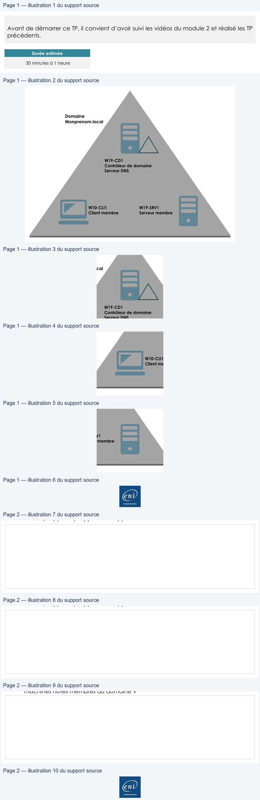

Transcription du document du Drive TSSR. La mise en forme est adaptée au Web ; les compléments IA du portail sont présentés séparément.
Page 1
Services réseau en environnement Microsoft
Mise en place d’un
domaine Active Directory
TP du Module 02 – Active Directory
Avant de démarrer ce TP, il convient d’avoir suivi les vidéos du module 2 et réalisé les TP
précédents.
Durée estimée
30 minutes à 1 heure
Énoncé
Prérequis
:

Disposer des machines virtuelles installées dans le TP 01 du module 01.
Création d’un contexte de domaine Active Directory
:
Domaine
Monprenom.local
W19-CD1
Contrôleur de domaine
Serveur DNS
W10-CLI1
Client membre
W19-SRV1
Serveur membre
Page 1/2
© ENI – Tous droits réservés
Texte relevé dans les illustrations
Page 2
Services réseau en environnement Microsoft
Analyse de différents cas d’ouverture de session
:
Assurez-vous au préalable que les trois hôtes communiquent entre eux.
Pouvez-vous ouvrir une session avec un compte local sur W10-CLI1 ?
Oui
Non
Pouvez-vous ouvrir une session avec un compte du domaine sur W10-CLI1 ?
Oui
Non
Avec quel(s) compte(s) utilisateur(s) ?
Pouvez-vous ouvrir une session sur le contrôleur de domaine W19-CD1 ?
Oui
Non
Avec quel(s) compte(s) utilisateur(s) ?
Dans quelle(s) console(s) et dans quel emplacement pouvez-vous visualiser les
machines hôtes membres du domaine ?
Page 2/2
© ENI – Tous droits réservés
Texte relevé dans les illustrations
Tableau du support — lecture structurée | Services réseau en environnement Microsoft |
| Analysede différents cas d’ouverture de session : | |
Assurez-vous au préalable que les trois hôtes communiquent entre eux
. | |
| Pouvez-vous ouvrir une session avec un compte local sur W10 -CLI1 ? |
| Oui Non |
| Pouvez-vous ouvrir une session avec un compte du domaine sur W10 -CLI1 ? |
| Oui Non |
| Avec quel(s) compte(s) utilisateur(s) ? |
| |
| Pouvez-vous ouvrir une session sur le contrôleur de domaine W19 -CD1 ? |
| Oui Non |
| Avec quel(s) compte(s) utilisateur(s) ? |

Illustrations du support Drive — pages 1 à 2. Les images sont regroupées sans redimensionnement ; aucun contenu généré par IA.